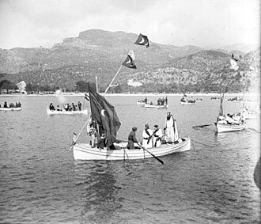
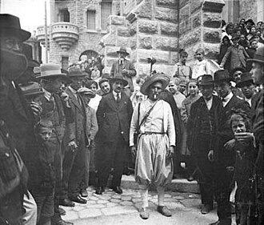
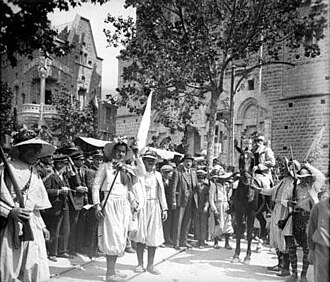

Sóller s'administrava mitjançant la 'Universitat', una forma orgànica de govern local on els Jurats vetllaven per la seguretat i l'abastiment.
🍊 Economia
L'agricultura de cítrics (taronges i llimones) i l'oli d'oliva eren els pilars. El comerç amb França per mar era vital per a la prosperitat de la vall.
🧵 Vestimenta
Llana per a l'hivern i lli per a l'estiu. Les 'Valentes Dones' vestien ropatges típics de la Serra, preparats per al dur treball agrícola i, en el seu cas, l'heroica defensa.
Títol POI
11 de Maig, 1561
Descripció històrica detallada.
Detalls de la recreació d'Es Firó.
📍 Punts Històrics
Sóller 1561 GPS Històric
Reviu l'èpica defensa dels "Sollerics" davant l'invasió corsària.
Explora la ruta històrica amb el GPS. El mapa rotarà automàticament segons la teva marxa.
Colectius
1920



Com funciona?
🗺️ Ubicació GPS: El mapa rotarà automàticament segons caminis.
📍 Zones històriques: Acosta't a les zones marcades per descobrir el seu passat.
🧭 Navegació Dinàmica: Tria qualsevol punt i prem 'Guiarme'. Dibuixarem la ruta pas a pas des de la teva ubicació fins allà.
⚙️ Botons: Utilitza els controls laterals per apropar, allunyar o centrar el mapa, així com veure l'Arxiu i el llistat sencer de punts.

.jpeg)
.jpeg)